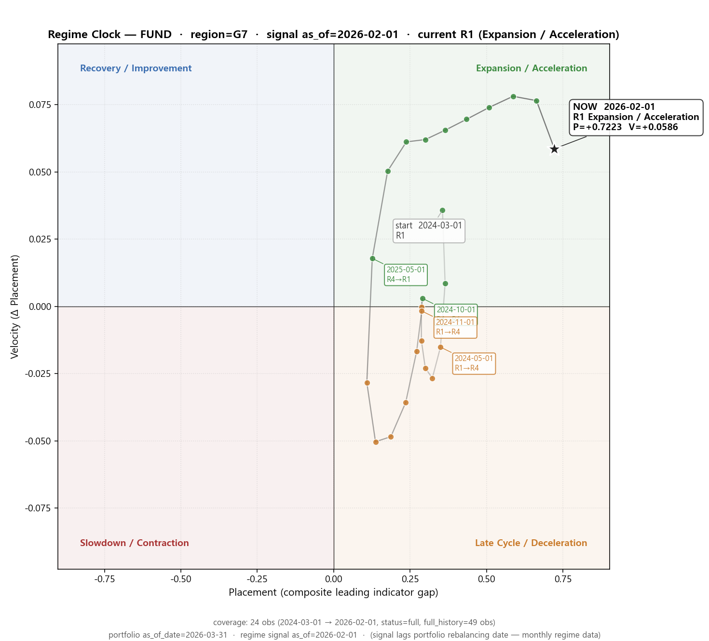
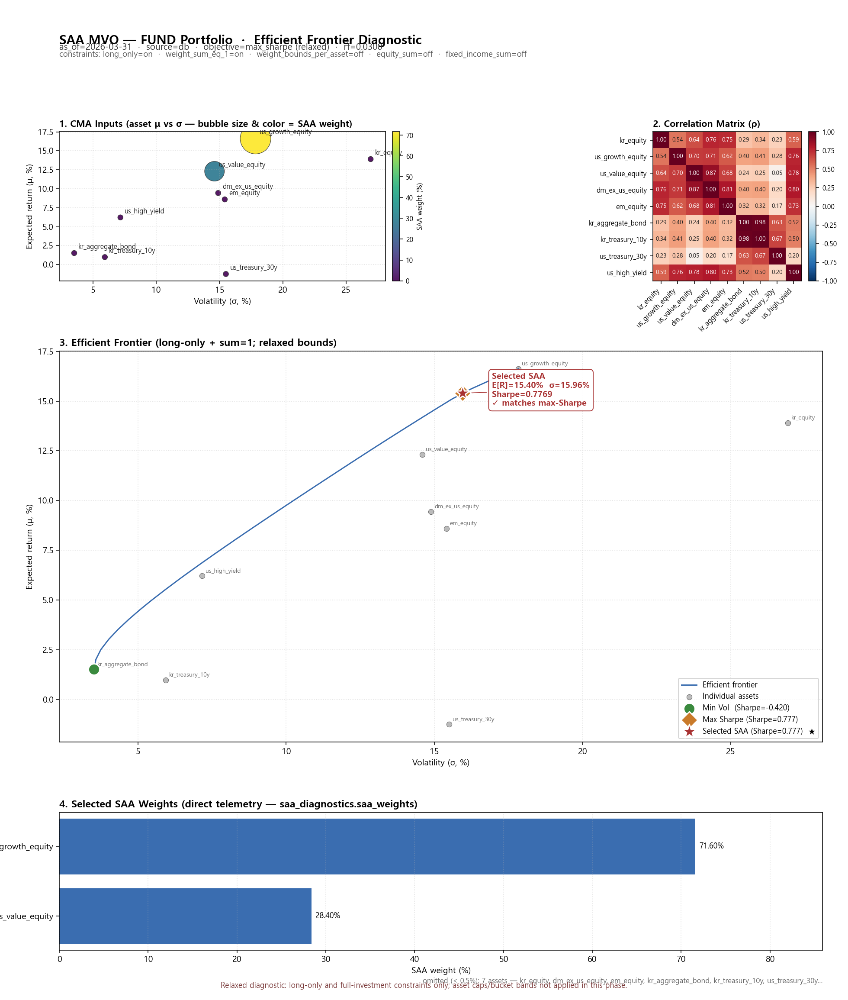
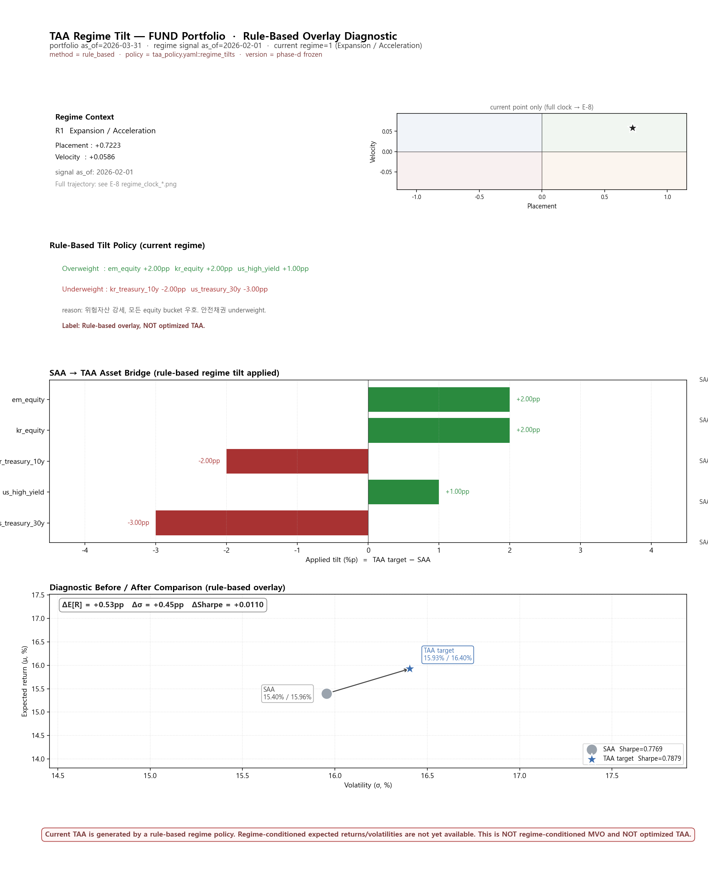
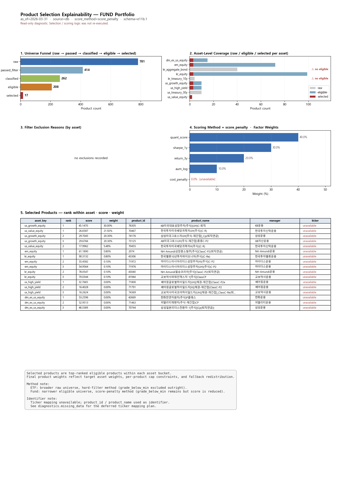

schema: e12.1
generated_at: 2026-05-11T07:17:10.307846+00:00 · operating_mode: relaxed_diagnostic
RELAXED DIAGNOSTIC RUN — NOT a production portfolio.
- TAA is rule-based regime overlay — NOT regime-conditioned MVO and NOT optimized TAA.
- Ticker mapping unavailable — product_id / product_name used as identifier.
- Regime-conditioned assumptions unavailable (deferred to future phase).
- Efficient frontier sampled by SLSQP grid scan (E-9), not analytical.
| 항목 | 값 |
|---|---|
| product_type | FUND |
| portfolio_as_of_date | 2026-03-31 |
| portfolio_as_of_run | 20260511 |
| source_mode | db |
| quality_status | warning |
| operating_mode | relaxed_diagnostic |
FUND portfolio constructed under regime R1 (Expansion / Acceleration). top SAA weights: us_growth_equity 71.60%, us_value_equity 28.40%, dm_ex_us_equity 0.00%. After rule-based regime tilt (SAA Sharpe 0.7769 → TAA Sharpe 0.7879, Δ=+0.0110), products were selected by quant_score / sharpe_1y / return_3y / aum_log factors. final top: us_growth_equity 70.60%, us_value_equity 27.40%, em_equity 1.00%.
| metric | value |
|---|---|
| current regime | R1 (Expansion / Acceleration) |
| SAA top weights | us_growth_equity 71.60%, us_value_equity 28.40%, dm_ex_us_equity 0.00% |
| TAA target top weights | us_growth_equity 71.60%, us_value_equity 28.40%, em_equity 2.00% |
| Final asset top | us_growth_equity 70.60%, us_value_equity 27.40%, em_equity 1.00% |
| Sharpe SAA → TAA | 0.7769 → 0.7879 (Δ=0.0110) |
Caveats:



Limitation: TAA is rule-based regime overlay — NOT regime-conditioned MVO and NOT optimized TAA.

Selected products (top 10 by weight):
| asset | rank | score | weight | product_id | product_name | manager |
|---|---|---|---|---|---|---|
| us_growth_equity | 1 | 45.15 | 30.00% | 76305 | KB미국대표성장주자(주식)(UH)C-퇴직 | KB운용 |
| us_value_equity | 1 | 26.66 | 21.92% | 70467 | 한국투자미국배당귀족자UH(주식)(C-R) | 한국투자신탁운용 |
| us_growth_equity | 2 | 29.70 | 20.30% | 74176 | 삼성미국그로스자UH[주식-재간접]_Cp(퇴직연금) | 삼성운용 |
| us_growth_equity | 3 | 29.68 | 20.30% | 73125 | AB미국그로스UH(주식-재간접)종류C-P2 | AB자산운용 |
| us_value_equity | 2 | 18.00 | 5.48% | 70455 | 한국투자미국배당귀족자H(주식)(C-R) | 한국투자신탁운용 |
| em_equity | 1 | 61.19 | 0.80% | 2074 | NH-Amundi성장중소형주[주식]ClassC-P2(퇴직연금) | NH-Amundi운용 |
| kr_equity | 1 | 90.31 | 0.80% | 43306 | 한국밸류10년투자파이오니아(주식)(C-Re) | 한국투자밸류운용 |
| em_equity | 2 | 55.46 | 0.10% | 71972 | 마이다스아시아리더스성장주자(H)(주식)C-P2 | 마이다스운용 |
| em_equity | 3 | 54.96 | 0.10% | 71976 | 마이다스아시아리더스성장주자(UH)(주식)C-P2 | 마이다스운용 |
| kr_equity | 2 | 78.05 | 0.10% | 43040 | NH-Amundi필승코리아[주식]ClassC-P2(퇴직연금) | NH-Amundi운용 |
Identifier note: ticker mapping unavailable — product_id / product_name used as identifier.
Final asset weights:
| asset | weight |
|---|---|
| us_growth_equity | 70.60% |
| us_value_equity | 27.40% |
| em_equity | 1.00% |
| kr_equity | 1.00% |
| us_high_yield | 0.00% |
| dm_ex_us_equity | 0.00% |
| kr_aggregate_bond | 0.00% |
| kr_treasury_10y | 0.00% |
| us_treasury_30y | 0.00% |
Final product top 10:
| asset | product_id | product_name | manager | role | weight |
|---|---|---|---|---|---|
| us_growth_equity | 76305 | KB미국대표성장주자(주식)(UH)C-퇴직 | KB운용 | core | 30.00% |
| us_value_equity | 70467 | 한국투자미국배당귀족자UH(주식)(C-R) | 한국투자신탁운용 | core | 21.92% |
| us_growth_equity | 74176 | 삼성미국그로스자UH[주식-재간접]_Cp(퇴직연금) | 삼성운용 | satellite | 20.30% |
| us_growth_equity | 73125 | AB미국그로스UH(주식-재간접)종류C-P2 | AB자산운용 | satellite | 20.30% |
| us_value_equity | 70455 | 한국투자미국배당귀족자H(주식)(C-R) | 한국투자신탁운용 | satellite | 5.48% |
| em_equity | 2074 | NH-Amundi성장중소형주[주식]ClassC-P2(퇴직연금) | NH-Amundi운용 | core | 0.80% |
| kr_equity | 43306 | 한국밸류10년투자파이오니아(주식)(C-Re) | 한국투자밸류운용 | core | 0.80% |
| em_equity | 71972 | 마이다스아시아리더스성장주자(H)(주식)C-P2 | 마이다스운용 | satellite | 0.10% |
| em_equity | 71976 | 마이다스아시아리더스성장주자(UH)(주식)C-P2 | 마이다스운용 | satellite | 0.10% |
| kr_equity | 43040 | NH-Amundi필승코리아[주식]ClassC-P2(퇴직연금) | NH-Amundi운용 | satellite | 0.10% |
| field | impact | next | source phase |
|---|---|---|---|
saa.efficient_frontier | selected SAA point 의 frontier 위치 시각화 불가 | E-9 phase | e7_explainability |
regime.history (24m) | 장기 regime timeline 시각화 불가 | regime backfill sidecar 또는 telemetry enhancement | e7_explainability |
product.scoring.scored_products | factor 별 score 분해 불가 | E-11 phase + selection/tool.py 에서 score 보존 | e7_explainability |
taa.regime_conditioned_assumptions | regime-aware MVO 비교 불가 | future phase (regime_mvo, future study only) | e7_explainability |
product.selected_products.ticker | Bloomberg/Reuters ticker 표기 불가 | 외부 ticker mapping table 도입 또는 DBProductRepository 확장 | e7_explainability |
regime_conditioned_assumptions | regime-aware MVO 비교 불가 | future phase — regime_mvo (currently future_study only) | e10_taa_tilt |
tilt_rules_applied[].confidence | tilt 의 통계적 유의성 표시 불가 | future phase — confidence scaling | e10_taa_tilt |
final_selection.selected_products[].ticker | Bloomberg/Reuters ticker 표기 불가 | 외부 ticker mapping table 도입 또는 DBProductRepository.product_metadata 확장 | e11b_product_selection_viz |
scoring.score_factors[].cost_penalty | 비용 패널티 미사용 (weight=0.0) | future phase — fee/expense ratio 데이터 도입 | e11b_product_selection_viz |